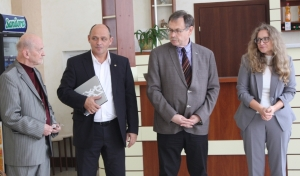

НОВИНИ
11 ЖОВТНЯ 2017, 16:14
В Університеті організовують черговий студентський фестиваль КВН «Осінь Політехніки 2017»
Колегія та профком студентів і аспірантів Національного університету «Львівська політехніка» організовують черговий студентський фестиваль КВН «Осінь Політехніки 2017».
В Університеті організовують черговий студентський фестиваль КВН «Осінь Політехніки 2017»
Колегія та профком студентів і аспірантів Національного університету «Львівська політехніка» організовують черговий студентський фестиваль КВН «Осінь Політехніки 2017».
Півфінали відбудуться 24 і 26 жовтня 2017 року в актовій залі І навчального корпусу Університету.
Початок о 18:00.
 11 ЖОВТНЯ 2017, 16:14
11 ЖОВТНЯ 2017, 16:14
Центр Студентського Капеланства розпочинає зустрічі для студентів у гуртожитках Львівської політехніки
Центр Студентського Капеланства Львівської архиєпархії УГКЦ розпочинає зустрічі для студентів у гуртожитках Національного університету «Львівська політехніка».
У студентській капличці гуртожитку № 9 зустрічі проводитимуть брати-семінаристи, початок о 18:00. А в гуртожитку № 3 о 19:30 зустрічати студентів буде капелан Львівської політехніки о. Юрко Остапюк, адже тут ці заходи пройдуть уперше.
Надалі такі зустрічі відбуватимуться щовівторка, а щосереди – у гуртожитку № 8.
Отож, не пропустіть чудової нагоди поговорити про актуальне і спільне для молоді та церкви, бо насправді цього є більше, ніж ви думаєте!
9 ЖОВТНЯ 2017, 14:14
«Лабіринти дизайну» для фахівців і не лише: в Інституті архітектури Львівської політехніки презентували альманах
В Інституті архітектури, на кафедрі дизайну та основ архітектури, презентували альманах.
Це третє видання дизайнерського альманаху (перший «Дизайн: львівська школа» побачив світ 2005 року, другий – «Дизайн в іменах», 2011 рік). Воно стосується дослідження українського дизайну в контексті формування збалансованого середовища життєдіяльності. Статті, проілюстровані великим добором тематичних світлин, присвячені дизайну середовища, костюма, графічних об’єктів, предметному дизайну.
Видання охоплює початок 21 століття – розкриває процеси становлення, професійної діяльності, проблеми й перспективи формування Львівської дизайнерської школи. Тут представлено всіх провідних дизайнерів Західного регіону.
Укладав альманах заступник голови Спілки дизайнерів України, голова Львівського регіонального відділу Спілки дизайнерів, доцент кафедри дизайну та основ архітектури Станіслав Мигаль.
«Лабіринти дизайну» для фахівців і не лише: в Інституті архітектури Львівської політехніки презентували альманах
В Інституті архітектури, на кафедрі дизайну та основ архітектури, презентували альманах.
Це третє видання дизайнерського альманаху (перший «Дизайн: львівська школа» побачив світ 2005 року, другий – «Дизайн в іменах», 2011 рік). Воно стосується дослідження українського дизайну в контексті формування збалансованого середовища життєдіяльності. Статті, проілюстровані великим добором тематичних світлин, присвячені дизайну середовища, костюма, графічних об’єктів, предметному дизайну.
Видання охоплює початок 21 століття – розкриває процеси становлення, професійної діяльності, проблеми й перспективи формування Львівської дизайнерської школи. Тут представлено всіх провідних дизайнерів Західного регіону.
Укладав альманах заступник голови Спілки дизайнерів України, голова Львівського регіонального відділу Спілки дизайнерів, доцент кафедри дизайну та основ архітектури Станіслав Мигаль.